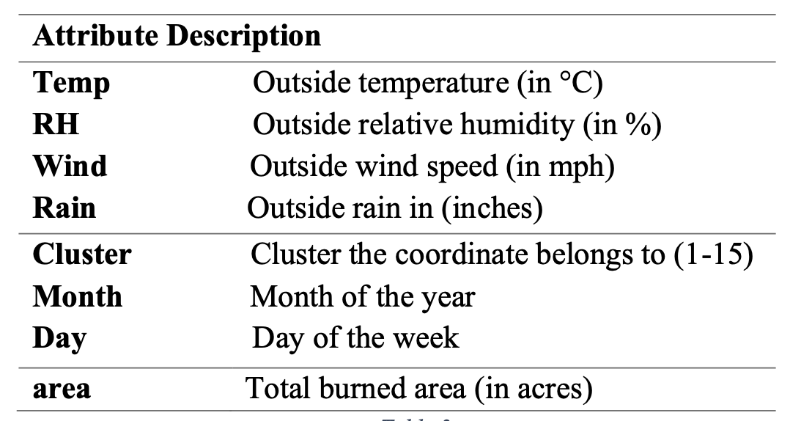

Project Summary: Predictive Modeling for Wildfire Mitigation
Climate change has significantly magnified the severity and frequency of wildfires, necessitating proactive measures to manage these escalating natural disasters. With extreme fires on the rise globally, accurately predicting fire size is pivotal in facilitating informed decisions for mitigating risks to both the environment and human populations. This study employs machine learning techniques, focusing on attributes like time, weather, and fire location to estimate the burned area of a fire.
In this study, the approach is bifurcated into two distinct parts. The initial phase employs regression techniques to estimate the burned area of fires in the United States, following a methodology akin to Cortez and Morais. The selection of optimal predictors based on evaluation metrics like RSME and MAE drives the subsequent use of these predictors in various classification models to determine fire size classes. These classes are critical in aiding resource allocation for fire mitigation based on their boundaries. Using spatial, temporal, and weather data in five experimental configurations, six machine learning models, including Multiple Regression, Support Vector Machines, Decision Trees, Random Forests, and Neural Networks, are implemented and assessed based on default settings akin to the Cortez and Morais approach. The latter phase shifts to classification models such as Support Vector Machines, K Nearest Neighbors, Decision Trees, Random Forests, Multinomial Logistic Regression, and XGBoost. Utilizing metrics like precision, recall, and accuracy, these models are evaluated, considering the importance of balanced datasets to ensure equal class prioritization. Grid search techniques are employed to optimize hyperparameters, such as k values in KNN and kernel choices in Support Vector Machines, ensuring the best model selection based on F1-score and ROC-AUC performance. The final model is comprehensively interpreted through feature importance assessment, particularly using permutation feature importance, shedding light on influential features in predicting fire size classes.
The implications of accurately predicting wildfire sizes are profound, allowing for proactive measures in resource allocation and timely warnings to at-risk residents for evacuation. The most effective model from Part I, utilizing Support Vector Machines with spatial, temporal, and weather features, showcased promising predictive capabilities. However, discrepancies in accuracy were noted compared to the Cortez and Morais experiment, likely due to the broader dataset used in this study encompassing fires across the United States. Focusing on specific regional data, like the Pacific Northwest, might enhance model accuracy. In Part II, the Random Forest and XGBoost models emerged as the top performers, showcasing comparable accuracies and ROC-AUC scores. Crucial features for predicting fire classes included cluster, month, and Relative Humidity. Eliminating less crucial features, as indicated by Permutation Feature Importance metrics, could refine the classification models. Additionally, obtaining precise vegetation data for fire regions, given the significance of the cluster feature, could further improve predictive outcomes.
For the code and details of the forest fire size prediction project, please visit the GitHub repository.